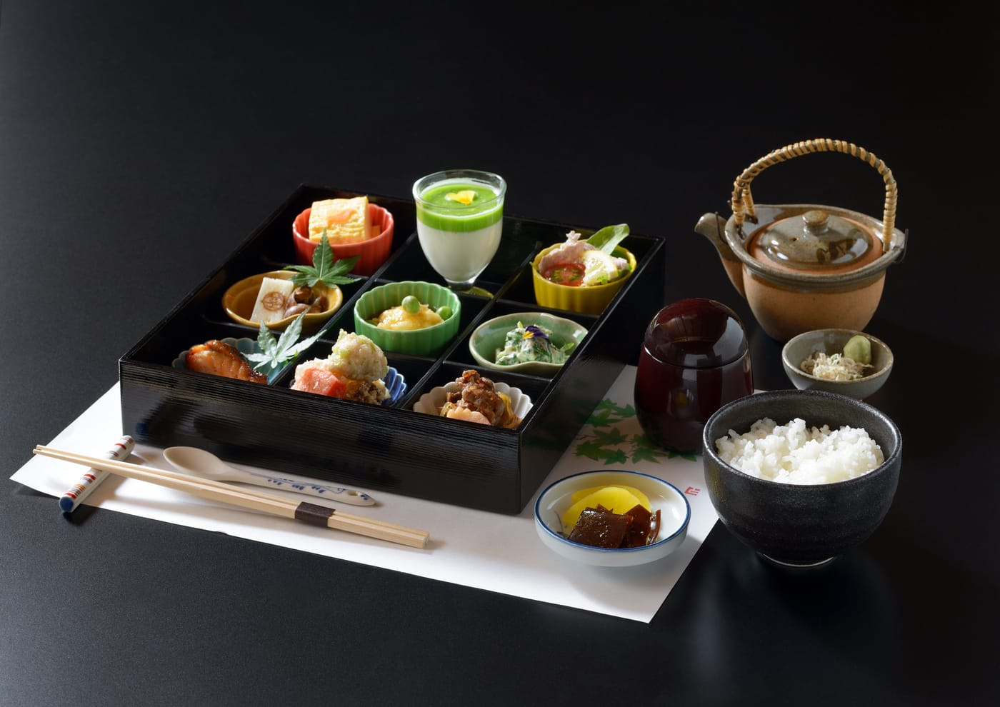
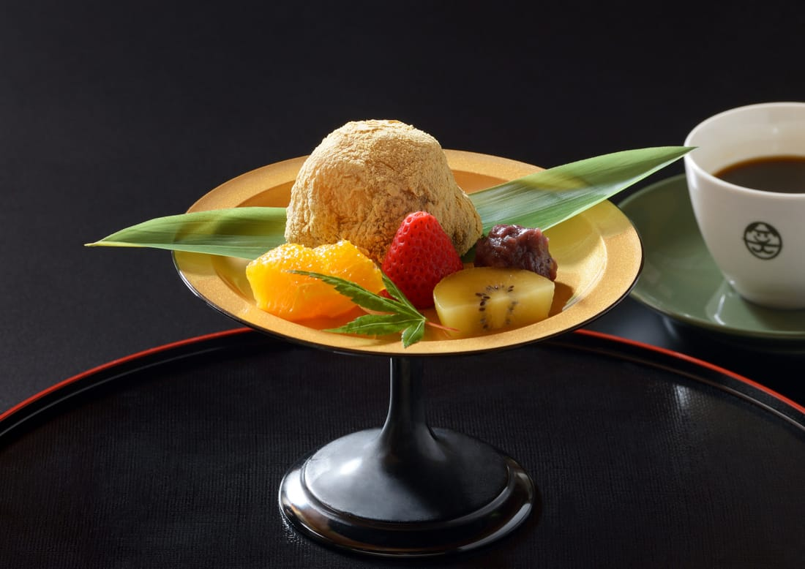
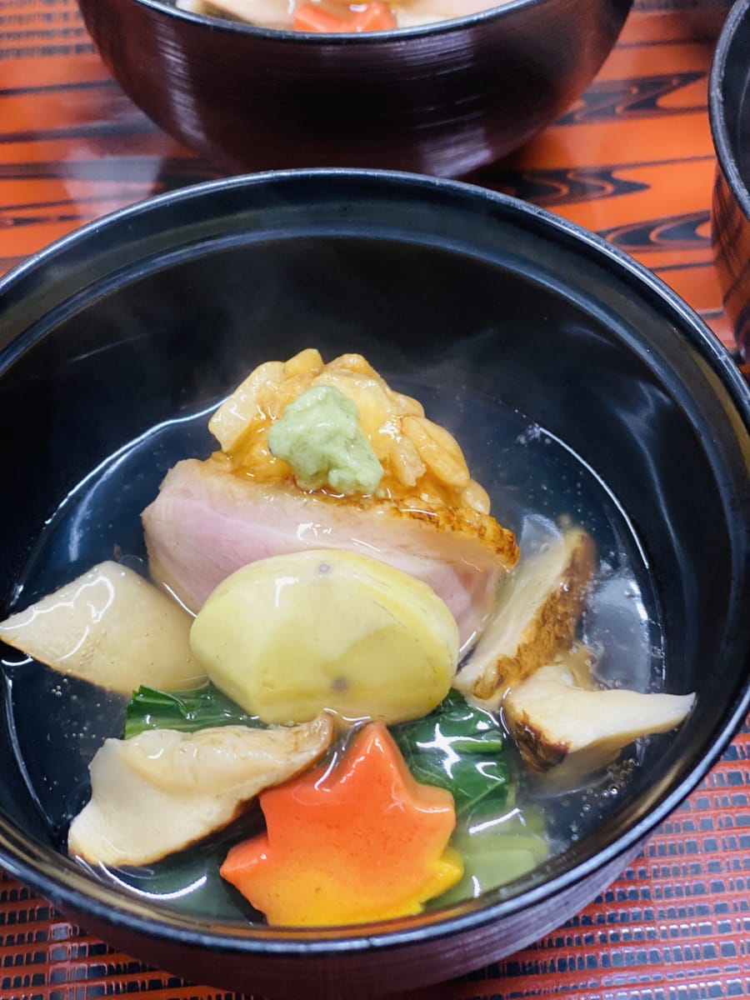
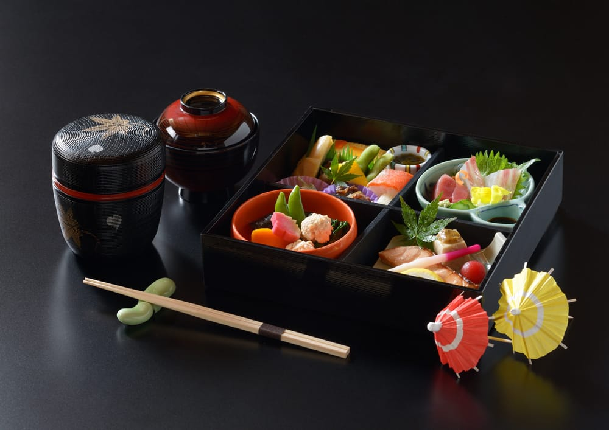
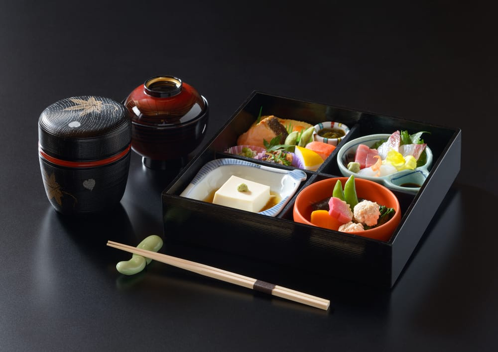

祖母の名は、ツタ。
STORY
映画館の跡に、七十年のおもてなし。
1956年、祖母の柴田ツタが旅館業として創業。その名「ツタ」から津多屋と名付けられました。現在の店は、テレビのなかった時代に園部町唯一の映画館として栄えた園部映画劇場の跡にあります。いまも「昔はよく映画を観にきたわ」という声が聞こえるお店です。
約70年、地元の御法事・御慶事から歓送迎会、寄り合いまで。京都丹波で採れた野菜を使った会席料理で、まちの節目に寄り添ってきました。



1956年、祖母の柴田ツタが旅館業として創業。その名「ツタ」から津多屋と名付けられました。現在の店は、テレビのなかった時代に園部町唯一の映画館として栄えた園部映画劇場の跡にあります。いまも「昔はよく映画を観にきたわ」という声が聞こえるお店です。
約70年、地元の御法事・御慶事から歓送迎会、寄り合いまで。京都丹波で採れた野菜を使った会席料理で、まちの節目に寄り添ってきました。
地元のお土産として愛される看板名物。抹茶笑日餅もあり。夏（6月〜9月末）は1階の「笑日餅cafe」で四角いカキ氷とともに。

園部藩・小出氏のまちならではの名を冠したお昼。園部城弁当（前菜付 2,700円）は店内のみ。

前菜・造り・焚き合わせ・焼き物…京都丹波の野菜を織り込んだ本格会席。ふぐ・すっぽんも。送迎バスは予約時に相談を。
津多屋は、かるたの札にもなっている園部城跡（明治2年完成・日本で最後に築かれた城）から約650m。周遊コース「戦国と城の道」の締めくくりに、園部城弁当はいかがですか。
完全予約制です。前日までにお電話（またはLINE）でご連絡ください。
| 店名 | 日本料理 津多屋 |
|---|---|
| 住所 | 京都府南丹市園部町若松町62-7 |
| 電話 | 0771-62-0508 |
| 営業時間 | 11:30〜14:30 ／ 17:00〜22:00（L.O. 21:30） 笑日餅cafe（6月〜9月末）12:00〜16:00 ※土日は店頭販売のみ |
| 定休日 | 水曜日 |
| ご予約 | 完全予約制（前日まで）。ランチも前日までの要予約。当日の人数変更・キャンセルは不可（変更は2日前・キャンセルは5日前まで）。 |
| アクセス | お車：京都縦貫道 園部ICから約5分／電車：JR園部駅から車で5分 |
| そのほか | クレジットカード利用不可。送迎バスあり（予約時にお申し付けください。8名様以上〜・地域条件あり）。 |